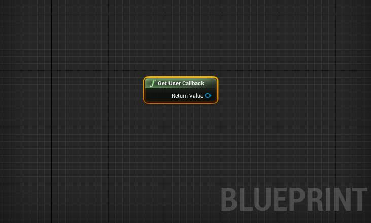
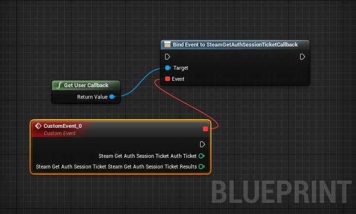

Steam User Callbacks¶
GetUserCallback¶
Get reference to User Callback Object to assign callback events.
Name |
Type |
Description |
|---|---|---|
Return Value |
PFUserCallbacks |
Pointer to user callback handler. |
SteamGetAuthSessionTicketCallback¶
Called when cerating an auth session ticket.
Name |
Type |
Description |
|---|---|---|
AuthTicket |
Integer |
id of ticket created. |
SteamGetAuthSessionTicketResults |
(Integer) EResult. |
result of the operation as an integer of EResult. |
SteamMicroTxnAuthorizationCallback¶
Called when a user has responded to a microtransaction authorization request.

Name |
Type |
Description |
|---|---|---|
AppID |
Integer |
App ID for the microtransaction. |
OrderID |
Integer |
Order ID provided for the microtransaction. |
bAuthorized |
bool |
Did the user authorize the transaction. |
LicensesUpdatedCallback¶
Called whenever the users licenses (owned packages) changes.
This callback has no return fields.
SteamServerConnectFailureCallback¶
Called when a connection attempt has failed.

Name |
Type |
Description |
|---|---|---|
SteamGetAuthSessionTicketResults |
(Integer) EResult. |
result of the operation as an integer of EResult. |
bStillRetrying |
bool |
Is steam client still trying to connect to the server? |
SteamServersConnectedCallback¶
Called when a connection to the Steam back-end has been established.
This callback has no return fields.